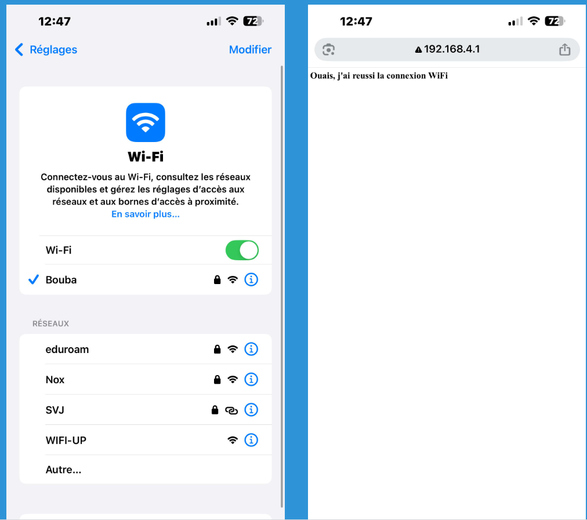

Contexte du Projet
De quoi s'agit-il ?
À l'occasion d'une compétition robotique étudiante organisée par mon école, j'ai conçu et développé un système IoT de supervision et de chronométrage destiné à automatiser la gestion des courses. La solution assure l'identification des robots, le suivi en temps réel des épreuves et le chronométrage automatique, tout en centralisant les informations sur une interface web accessible depuis un navigateur. Il a été pensé pour être utilisé notamment lors des journées portes ouvertes, où la simplicité d'utilisation, la lisibilité des données et la démonstration des technologies mises en œuvre constituent des enjeux importants.
Objectifs et Challenges
L'objectif était de concevoir un système fiable, autonome et intuitif capable d'identifier chaque robot, de superviser les différentes étapes d'une course et d'enregistrer automatiquement les temps de parcours, tout en limitant les interventions humaines. Le principal défi consistait à synchroniser plusieurs technologies embarquées afin de garantir une détection précise des événements, une communication temps réel et une interface simple d'utilisation, accessible à un public technique comme non technique.
Réalisations et tâches effectuées
Analyse et choix de l'environnement de développement
Afin de garantir un développement fiable et évolutif de l'application embarquée, j'ai évalué plusieurs environnements de développement compatibles avec l'ESP32 : Arduino IDE, Thonny (MicroPython) et PlatformIO intégré à Visual Studio Code.
Le choix s'est finalement porté sur PlatformIO avec le framework Arduino, qui offre un bon compromis entre simplicité de développement et fonctionnalités avancées. Son intégration à Visual Studio Code facilite la structuration du code, la gestion des bibliothèques, le contrôle de version et les phases de test, tout en offrant un environnement adapté aux projets embarqués de moyenne à grande envergure.
Ce choix s'inscrit également dans une démarche d'évolution du projet. L'architecture mise en place permettra, si nécessaire, une migration vers ESP-IDF, le framework officiel d'Espressif, afin de bénéficier d'un accès plus fin aux ressources matérielles de l'ESP32 et à ses fonctionnalités avancées pour des applications temps réel ou plus exigeantes.
| IDE / Environnement | Langage | Niveau | Avantages | Inconvénients | Cas d'utilisation |
|---|---|---|---|---|---|
| Arduino IDE | C/C++ (simplifié) | Débutant intermédiaire | Très simple, beaucoup de bibliothèques, énorme communauté, rapide pour tester un capteur | Peu adapté aux gros projets, gestion de dépendances limitée, débogage faible | Prototypes, projets étudiants, IoT simple |
| PlatformIO + VS Code | C/C++ | Intermédiaire professionnel | Gestion propre des projets, Git, autocomplétion, débogueur, tests unitaires, support Arduino + ESP-IDF | Configuration initiale plus longue | Projets embarqués sérieux, portfolio, entreprise |
| ESP-IDF (Espressif) | C/C++ | Avancé | Framework officiel Espressif, accès complet au hardware, FreeRTOS natif, performances maximales | Courbe d'apprentissage plus élevée | Produits industriels, IoT professionnel |
| MicroPython + Thonny | Python | Débutant | Très rapide pour expérimenter, code simple | Moins performant, pas idéal pour produits finis | Prototypage rapide, apprentissage |
| Eclipse + ESP-IDF | C/C++ | Avancé | Environnement complet | Plus lourd, moins populaire aujourd'hui | Projets industriels existants |
Prise en main de l'ESP32 et de l'environnement de développement
Avant d'aborder le développement du projet, une phase de prise en main de l'ESP32-WROOM-32 et de son environnement de développement a été réalisée afin de valider le bon fonctionnement du matériel et des outils logiciels. Après l'installation et la configuration de PlatformIO sous Visual Studio Code, un premier projet a été créé pour tester le clignotement de la LED intégrée (GPIO2). Cette première expérimentation a ensuite été complétée par l'exploration du brochage de la carte afin de piloter des LEDs externes en respectant les contraintes électriques liées aux GPIO. En m'appuyant sur un tutoriel pour la configuration initiale, cette étape m'a permis de maîtriser rapidement l'environnement de développement, de comprendre l'architecture des entrées/sorties de l'ESP32 et de disposer d'une base solide avant d'intégrer des fonctionnalités plus avancées au projet.
Communication Wi-Fi embarquée sur ESP32
La mise en œuvre de la communication Wi-Fi constitue une étape clé du projet, l'objectif étant de permettre à l'ESP32 d'héberger une interface web accessible directement depuis un smartphone ou un ordinateur. Cette fonctionnalité est au cœur du démonstrateur, puisqu'elle assure la diffusion des informations de course et l'interaction avec le système sans nécessiter d'infrastructure réseau externe.
Pour atteindre cet objectif, j'ai étudié le fonctionnement des communications Wi-Fi, les différents modes de fonctionnement de l'ESP32 (Station, Point d'Accès et mode mixte), ainsi que les principes des échanges HTTP entre un client et un serveur embarqué. Cette analyse m'a permis de sélectionner une architecture adaptée au projet en configurant l'ESP32 en mode Point d'Accès, créant ainsi un réseau Wi-Fi autonome auquel les utilisateurs peuvent se connecter directement
J'ai ensuite développé un serveur web embarqué à l'aide de la bibliothèque WebServer.h, capable de traiter les requêtes HTTP et de générer dynamiquement une interface web. Afin de valider son fonctionnement, une première application a été réalisée permettant de piloter une LED à distance depuis un navigateur. Ce prototype a permis de vérifier la fiabilité de la communication, de maîtriser les mécanismes de dialogue entre le client et le microcontrôleur, et de poser les bases de l'interface web qui sera utilisée pour afficher les données du démonstrateur.

CodeEtude de la technologie RDIF et communication entre l'ESP32 et le lecteur RC522
L'intégration du lecteur RFID RC522 constitue une étape clé du projet, puisqu'elle permet d'assurer l'identification automatique des robots lors de leur passage aux points de contrôle de la course. La première phase a consisté à établir et valider la communication entre l'ESP32 et le module RFID afin de garantir la détection fiable des badges et la récupération des informations nécessaires au traitement embarqué.
Une fois cette communication opérationnelle, la donnée RFID a été exploitée afin de développer une première logique de gestion d'état. Initialement, le système se trouve dans un état d'attente avec la LED rouge activée et la LED verte désactivée. Lorsqu'un badge est détecté, l'ESP32 interprète l'événement et provoque un changement d'état : la LED verte s'allume, indiquant une identification validée, tandis que la LED rouge s'éteint. Une nouvelle lecture du même badge entraîne le basculement inverse, permettant de simuler un mécanisme d'entrée/sortie. Cette première implémentation a permis de valider la chaîne complète de traitement, depuis l'acquisition de l'information RFID jusqu'à la commande des sorties du système embarqué.
À partir de cette base fonctionnelle, le système a ensuite été enrichi par l'ajout d'une gestion temporelle des événements. Lors de la première détection du badge, l'ESP32 mémorise l'instant d'activation, puis calcule automatiquement la durée écoulée lors de la lecture suivante correspondant au changement d'état. Cette évolution permet d'introduire une notion de chronométrage et constitue une première étape vers le suivi automatisé du temps de parcours des robots.
Pour obtenir des données temporelles fiables, l'ESP32 a été configuré en mode Station Wi-Fi (STA) afin d'accéder à un serveur NTP (Network Time Protocol) et synchroniser son horloge interne avec une référence horaire précise. Les informations collectées sont ensuite traitées et mises à disposition via un serveur web embarqué hébergé directement sur l'ESP32, permettant leur consultation depuis une interface accessible par navigateur.
Identification des robots par UID RFID
Après avoir validé la communication entre l’ESP32 et le lecteur RFID RC522, puis mis en place le chronométrage basé sur deux lectures successives d’un badge, l’étape suivante a consisté à identifier individuellement chaque robot participant à la course.
Pour cela, j’ai développé une fonctionnalité permettant de récupérer l’UID unique associé à chaque carte RFID. Lorsqu’un badge est présenté devant le lecteur, son identifiant est lu et transmit via la communication SPI entre le RC522 et l’ESP32, puis affiché sur afin de vérifier son unicité.
JUne fois les UID récupérés, chaque carte est associée à un nom de robot. J’avais initialement envisagé de mettre en place une base de données pour gérer cette correspondance, mais j’ai finalement choisi une implémentation directement intégrée dans le programme embarqué à l’aide de conditions. Cette approche permet de conserver une architecture simple tout en répondant aux besoins du prototype. Cette correspondance permet ainsi au système d’identifier automatiquement le robot détecté lors du passage au départ ou à l’arrivée, et prépare l’exploitation des données dans l’interface web de suivi des courses.

Création d'une interface web de supervision embarquée
Après la mise en place de l'identification RFID et de la gestion des événements, l'étape suivante a consisté à développer une interface web embarquée permettant de superviser et de contrôler le déroulement de la compétition robotique.
Hébergée directement sur l’ESP32, cette interface communique avec l’ordinateur de supervision via une connexion Wi-Fi. Elle permet à l’utilisateur de piloter le fonctionnement du système à travers différentes commandes, notamment l’activation de la détection des badges, la mise en pause de la course et le suivi des informations en temps réel.
Lors du lancement d’une épreuve, l’utilisateur active la phase d’identification depuis l’interface. Les participants peuvent alors présenter leur carte RFID devant le lecteur RC522 ; l’ESP32 récupère l’UID associé, identifie le robot correspondant, puis transmet l’information à l’interface web afin d’afficher automatiquement les participants enregistrés.
Cette interface constitue ainsi le point central d’interaction entre le système embarqué et l’utilisateur. Elle regroupe la commande du processus, la visualisation des informations de course et la supervision du démonstrateur, en intégrant la communication Wi-Fi, le traitement des données RFID et l’affichage dynamique des résultats.
Intégration de l’interface web de supervision au système de pointage RFID
Afin de fiabiliser le processus d'identification des robots avant chaque course, j'ai intégré le lecteur RFID à l'interface web embarquée de l'ESP32 en mettant en place un mécanisme de contrôle de l'activation du pointage.
Le système repose sur une logique d'autorisation explicite : la lecture des badges RFID n'est possible qu'après l'activation du mode pointage via un bouton dédié sur l'interface web. Cette action active le lecteur RFID et allume une LED d'état connectée au GPIO2, offrant un retour visuel immédiat sur la disponibilité du système. À l'inverse, la désactivation du pointage coupe instantanément la lecture RFID et empêche toute nouvelle identification. Cette approche garantit que seuls les robots enregistrés durant la phase de préparation sont pris en compte, tout en évitant les lectures involontaires une fois la course lancée.
Cette fonctionnalité a nécessité la synchronisation entre l'interface web, la logique embarquée de l'ESP32 et le lecteur RFID afin d'assurer un contrôle fiable des états du système et une gestion cohérente des différentes phases du pointage.
Concevoir un capteur pour détecter un robot
L’objectif de ce projet est de détecter la présence ou l’absence d’un robot à l’aide d’un capteur infrarouge fonctionnant par réflexion. Le système repose sur l’émission d’un signal infrarouge modulé et sur l’analyse du signal réfléchi.
Une LED infrarouge, pilotée par un ESP32, émet un signal modulé à 1 kHz. Lorsque le robot se trouve en face du capteur, une partie de ce signal est réfléchie vers une photodiode. Le courant généré par celle-ci est ensuite amplifié et mis en forme afin d’obtenir un signal logique exploitable par l’ESP32.
En mesurant la fréquence du signal reçu, l’ESP32 détermine la présence du robot. Une fréquence proche de 1 kHz indique que le robot est détecté, tandis que si la differece est significatif correspond à l’absence du robot.
Intégration du capteur infrarouge et automatisation du déroulement de la course
Cette activité s’inscrit dans la continuité directe des travaux précédents et vise à intégrer la détection physique du robot dans la logique globale du système et dans l’interface web. Après l’identification des participants par RFID, l’objectif est désormais d’automatiser la détection du robot sur la piste et le déclenchement du chronométrage.
Lorsque l’utilisateur appuie sur le bouton Start de l’interface web, le système change de mode de fonctionnement. Le lecteur RFID est alors désactivé afin d’empêcher toute nouvelle identification, et le capteur infrarouge de présence est activé. Ce capteur repose sur une détection par réflexion infrarouge modulée, permettant de déterminer si le robot est présent ou non sur la ligne de départ
Dans le cas simplifié d’une course en solo, la présence du robot est signalée par l’allumage d’une LED connectée au GPIO37, confirmant visuellement que le robot est correctement positionné sur la piste. Tant que le robot est détecté, la LED reste allumée. Dès que le robot commence à se déplacer, il n’est plus détecté par le capteur : la LED s’éteint et le chronométrage démarre automatiquement. Lors de la prochaine détection du robot (arrivée), la LED se rallume et le système calcule le temps écoulé entre le départ et l’arrivée, puis affiche ce résultat dans un tableau sur l’interface web.
L’interface web intègre également des boutons de gestion globale du système. Le bouton Reset permet d’effacer toutes les informations en cours (identité du robot, temps mesurés, état du système), tandis que le bouton Restart permet de relancer une nouvelle course sans redémarrer l’ESP32.

Présentation du prototype lors de la Journée Portes Ouvertes
Bilan des compétences développées
Compétences Techniques (Hard Skills)
Conception et développement de systèmes embarqués
- Développement d'une application embarquée complète sur ESP32 en langage C/C++, intégrant la gestion des entrées/sorties, la communication avec des périphériques externes et l'exécution d'une logique temps réel.
- Conception d'une architecture logicielle basée sur la gestion d'états afin de synchroniser les différentes phases du système : identification RFID, préparation de course, détection du robot et chronométrage.
- Structuration d'un projet embarqué avec PlatformIO sous Visual Studio Code, incluant la gestion des bibliothèques, l'organisation du code et la préparation à une évolution vers des environnements industriels comme ESP-IDF.
Électronique et intégration capteurs
- Intégration et mise en œuvre de périphériques électroniques autour de l'ESP32 : lecteur RFID RC522, capteur infrarouge, LEDs d'état et interfaces de commande.
- Conception d'une chaîne complète de détection infrarouge : génération d'un signal modulé, acquisition par photodiode, conditionnement du signal et exploitation par microcontrôleur.
- Analyse et validation du fonctionnement des systèmes électroniques par des phases de test et de débogage matériel.
Communication et IoT
- Mise en œuvre d'une communication Wi-Fi embarquée avec configuration de l'ESP32 en mode point d'accès autonome.
- Développement d'un serveur web embarqué permettant la supervision et le pilotage du système depuis un navigateur.
- Gestion des échanges entre le système embarqué et l'utilisateur via une interface web dynamique.
- Exploitation de protocoles de communication matériels : SPI pour l'interfaçage avec le lecteur RFID RC522.
Développement logiciel embarqué
- Programmation de fonctionnalités de traitement d'événements : identification des robots, gestion des états, acquisition des données et calcul du temps de course.
- Implémentation d'algorithmes de traitement permettant l'analyse des signaux reçus et la détection automatique des événements.
- Gestion de données embarquées : association UID RFID / identité robot, stockage temporaire des informations de course et affichage des résultats.
Validation et mise au point système
- Définition de scénarios de test pour vérifier la fiabilité du système dans différentes conditions d'utilisation.
- Diagnostic et correction de dysfonctionnements liés à l'interaction entre composants matériels et logiciels.
- Validation finale du prototype par une démonstration fonctionnelle lors de la Journée Portes Ouvertes.
Compétences Transversales (Soft Skills)
Gestion de projet technique de bout en bout
- Conduite d'un projet complet depuis l'analyse du besoin jusqu'à la démonstration finale d'un prototype opérationnel.
- Capacité à découper un problème complexe en sous-fonctionnalités : identification, communication, supervision, détection et chronométrage.
- Organisation progressive du développement avec validation de chaque brique avant intégration globale.
Autonomie et capacité d'apprentissage
- Recherche et exploitation de documentations techniques, datasheets fabricants et ressources spécialisées pour intégrer de nouveaux composants.
- Comparaison et sélection d'outils de développement adaptés aux contraintes du projet.
- Montée en compétence rapide sur l'écosystème ESP32, les communications IoT et les systèmes embarqués.
Analyse et résolution de problèmes
- Approche méthodique du diagnostic lors des phases de développement et d'intégration.
- Identification des interactions entre contraintes matérielles et logicielles afin d'améliorer la fiabilité du système.
- Capacité à proposer des solutions techniques adaptées aux objectifs du projet.
Communication et valorisation technique
- Présentation d'un prototype fonctionnel devant un public technique et non technique lors d'un événement de promotion de l'école.
- Capacité à expliquer le fonctionnement d'un système embarqué complexe de manière accessible selon le niveau de l'interlocuteur.
Synthèse du projet
À travers ce projet, j'ai développé une approche complète de conception d'un système embarqué connecté, en intégrant les différentes dimensions d'un produit industriel : acquisition de données capteurs, traitement embarqué, communication IoT, interface utilisateur et validation fonctionnelle. Cette expérience m'a permis de renforcer ma capacité à concevoir des solutions électroniques autonomes et fiables, adaptées aux problématiques rencontrées dans les domaines de l'IoT, des systèmes embarqués et des systèmes de test et validation.